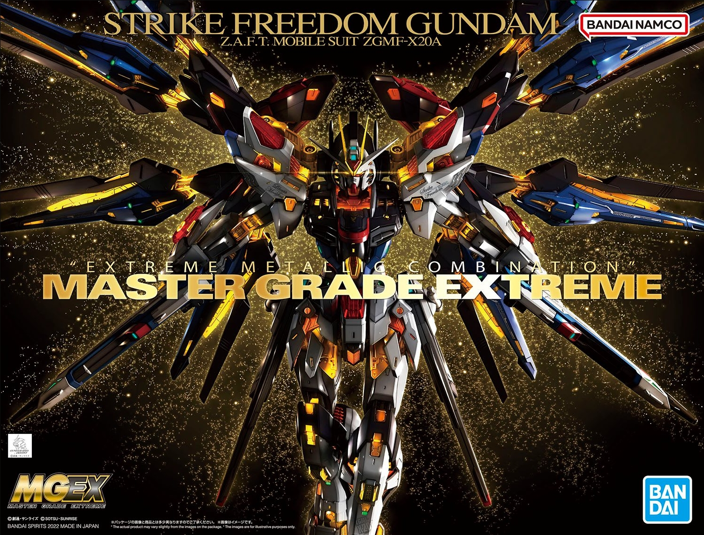
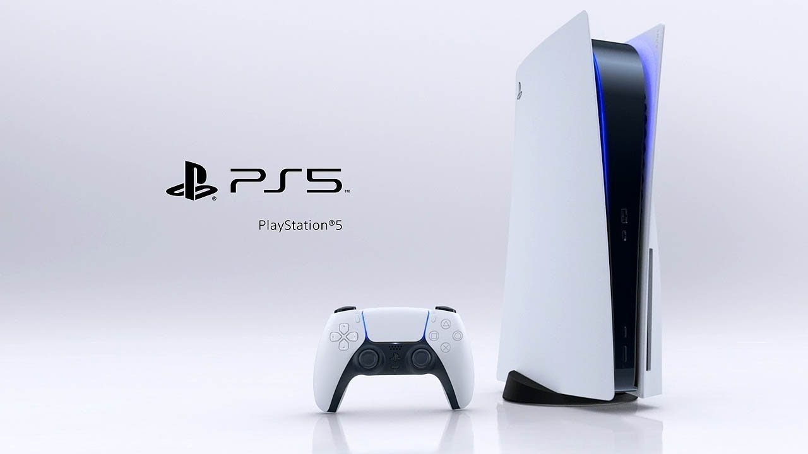

I got into Gunpla (Gundam Plastic Model Kits) in 2021 and since then, I have built multiple model kits.
I have built multiple scale of gunpla like 1/100 Master Grade (MG) and 1/144 Real Grade.
My favourite Gunpla is the Real Grade RX-93-V2 Hi-Nu Gundam.
The next model kit that I plan to save up for will be the MGEX Strike Freedom pictured above.

I loved playing with lego when I was a kid.
I remember spending hours in my room, creating my own worlds and stories with the colorful bricks.
Lego was more than just a toy for me, it was a way of expressing my imagination and creativity.
I still collect lego to this day but not that often.
However, I still play with the boxes of lego that I have at home when I have the chance.
Some of the brands that I own include Speed Champions, Star Wars,Creator and Technic.
One set that I hope to buy in the near future will be the Lego Optimus Prime Pictured above.

I love playing video games on both PlayStation 5 and Nintendo Switch.
They are different but both fun in their own ways.
PlayStation 5 has amazing graphics and performance, and I enjoy the immersive games like 'Spider-man: Miles Morales'.
Nintendo Switch has more casual and family-friendly games, like 'Mario Kart 8 Deluxe', and I like the portability and versatility of the console.
I can play it on the TV or on the go, and I can share it with my friends and family.
Sometimes I switch between them depending on my mood and preference. They are both great consoles that make me happy.